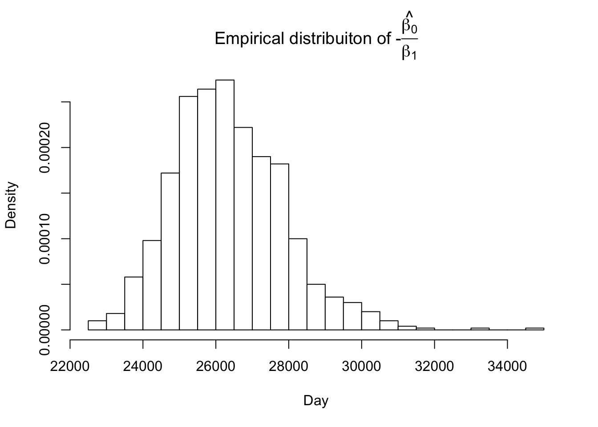

10 Day 10
10.1 Review
Confidence intervals for derived quantities
The wrong way
## 2.5 % 97.5 %
## 95.34554 99.16611## 2.5 % 97.5 %
## -0.004181951 -0.003251031## 2.5 % 97.5 %
## 22799.30 30502.97## 2.5 % 97.5 %
## 2057.381 2078.487The delta method
“Manually”
x1 = as.numeric(coef(m1)[1]) # b0
x2 = as.numeric(coef(m1)[2]) # b1
# first derivative of g(X) = -x1/x2
gprime_mu = attr(eval(deriv(~ -x1/x2, c("x1","x2"))), "gradient")
# approximate covariance of g(X)
cov_g = gprime_mu%*%vcov(m1)%*%t(gprime_mu)
sqrt(cov_g)## [,1]
## [1,] 1447.542# wald-type confidence intervals
dry_day_l = dry_day - 1.96 * sqrt(cov_g)
dry_day_u = dry_day + 1.96 * sqrt(cov_g)
# lower estimate
1994.917 + dry_day_l/365## [,1]
## [1,] 2058.839## [,1]
## [1,] 2074.385msmpackage
## [1] 1447.542## [1] 2058.839## [1] 2074.385- Non-parametric bootstrap
For a dataset with \(n\) observations, take a sample of size \(n\) with replacement.
Fit the sampled data to the chosen statistical model.
Save the parameters and/or estiamtes of interest.
Repeat the process \(m\) times.
Pseudo-code
SET \(m \to m\)
SET \(n \to \text{LENGTH}(Y)\)
FOR \(i = 1\) TO \(m\) DO
DRAW \((S_1, S_2, \dots, S_n)\) independently from \(\{1,2,\dots,n\}\)
SET \(\mathbf{S} = (S_1, S_2, \dots, S_n)\)
DEFINE \((x_j^*, y_j^*) = (x_{S_j}, y_{S_j})\) for \(j = 1,2,\dots,n\)
FIT \(y_j^* = \beta_0^* + \beta_1^* x_j^* + \varepsilon_j^*\) for \(j = 1,2,\dots,n\)
COMPUTE \(\theta^* = \frac{-\beta_0^*}{\beta_1^*}\)
SET \(\theta_i \to \mathbf{\theta}^*\)
SET \(i \to i + 1\)
END FOR
- R code
# reproducibility seed
# if we change this then the results will change with it
set.seed(73)
# number of bootstrap iterations
m = 1000
# number of observations in the data
n = nrow(wlev)
# empty matrix for derived quantities
dry_day_boot = matrix(,m,1)
# for loop across bootstrap iterations
for(i in 1:m){
# sample N times from the data WITH replacement
boot_sample = sample(1:n, replace = TRUE)
# create temporary data for that iteration of sampling
temp_data = wlev[boot_sample,c(19,21)]
# fit the model to the sampled data
model = lm(lev_va_ft ~ day_i, data = temp_data)
# compute dry day using the coefficients of that model
dry_day_boot[i,] = -coef(model)[1]/coef(model)[2]
}Inference from confidence intervals
- What does a confidence intervals actually measure?
Sampling distributions
Hypothetical, unobservable mathematical objects
Confidence intervals are derived from the assumption of their existence
Empirical distributions
- Summary statistics and plots are intuitive
Empirical distribution \(\approx\) sampling distribution
library(latex2exp)
hist(dry_day_boot,col="white",xlab="Day",
main=TeX(
'Empirical distribuiton of $$-$$\\hat{\\frac{$\\beta_0}{$\\beta_1}}'),
freq=FALSE, breaks=20)
- Affine transformation
dry_year_boot = (dry_day_boot/365) + 1994.917
hist(dry_year_boot,col="white",xlab="Year",
main=TeX(
'Empirical distribuiton of $$-$$\\hat{\\frac{$\\beta_0}{$\\beta_1}}'),
freq=FALSE,breaks=20)
# five number summary of empirical distribution of
# estimated year that the ogallala dries up
quantile(dry_year_boot, c(0,0.25,0.5,0.75,1))## 0% 25% 50% 75% 100%
## 2056.961 2064.169 2066.813 2069.727 2090.409## 2.5% 97.5%
## 2060.030 2076.428- Optimized bootstrap for simple linear regression
# bootstrap iterations
m = 1000
# x and y data
x = wlev$day_i
y = wlev$lev_va_ft
# number of observations in the data
n = length(y)
# reproducibility seed
set.seed(73)
# replicate acts similarly to a for loop
dry_day_boot2 = replicate(m, {
# sampling index
idx = sample.int(n, n, replace = TRUE)
# sample from x and y
x_boot = x[idx]
y_boot = y[idx]
# compute the mean of each sample
xbar = mean(x_boot)
ybar = mean(y_boot)
# perform scalar form simple linear regression for the sample
b1 = sum((x_boot - xbar) * (y_boot - ybar)) / sum((x_boot - xbar)^2)
b0 = ybar - b1 * xbar
# compute dry day
-b0 / b1 })## 0% 25% 50% 75% 100%
## 2056.961 2064.169 2066.813 2069.727 2090.409## 2.5% 97.5%
## 2060.030 2076.428- Using the mosaic package
library(mosaic) # one of many package options for bootstrapping
# reproducibility seed
set.seed(73)
# mosaic's bootstrap
bootstrap = do(1000) * coef(lm(lev_va_ft ~ day_i, data = resample(wlev)))
# fills a dataframe* with each parameter from each iteration
# *check str(bootstrap) and tell me why im lying
head(bootstrap)## Intercept day_i
## 1 97.06151 -0.003888550
## 2 97.23733 -0.003629539
## 3 97.86672 -0.003786088
## 4 95.07953 -0.003089260
## 5 96.99797 -0.003701108
## 6 97.02268 -0.003890343## 2.5% 97.5%
## 23766.07 29751.60## 2.5% 97.5%
## 2060.030 2076.428Any questions?
10.2 In-class activity
Work together with your partner to find data from Dryad, Kaggle, or another valid data repository.
Select at least \(3\) and at most \(6\) variables from the data.
Compute the mean, standard deviation, and five number summary for those variables.
Create at least 2 different graphics from those variables, describing their distributions or relationships with one another.
Select a response variable, then write out a linear model for predicting that response.
Fit the model to the data using the
lm()function in R.Produce a summary, coefficients, and confidence intervals for that model.
Plot the fitted regression line for the model onto a scatterplot for each variable with the response.
10.4 Projects
Week 8 is closer than you think
Start thinking about what you want to do
Start thinking about who you might work well with
Think harder about who you won’t work well with
There’s no shame in being incompatible in a group
Try to align your strengths
In a statistics classroom, I would pair myself with someone more mathematically inclined.
In a computer science classroom, I’m the math guy.
In a biology classroom, I’m whatever my project team sucks the most at.
A note to provide zero pressure to the project whatsoever
Publications are very valuable in hiring
Kansas Water Institute, ID3A, etc.
10.5 Class choice lectures
Get curious (please)
Statistical topics are like wizard names
Longer name = chill, relaxed, someone you’d get a beer with
Shorter name = fear for your life
If the class has no direction/curiosity we’re doing:
GLMMs
Bayesian models
Eigenvalues
Search
Those lectures will not be pretty
There will be math
This is a threat (I’m joking) (Legally speaking)